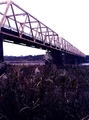

ここまできたらやっぱり顔出しておこうというわけで昨日の昼飯はコンビニ弁当とポケトラ持って鬼怒川の河原へ。増水してたので水辺には行かなかったが、"Straight, No Chaser"と"Yardbird Suite"をれんしゅう。
記念写真を撮ったけど帰ってみたら大分光の色合いが違ってて、しかも、記憶も曖昧なので、思いっきり違う色調にしちゃった。まあ実際見て楽しいようなものもない普通の河原なんだけどな。
最近は休日少なくとも一日はぼーっと休まないとつらいので、今日はごろごろしながら、気になっていた単語をまとめてネット検索。しかし、ほんとそういうところは便利だし、すごいなネット社会。